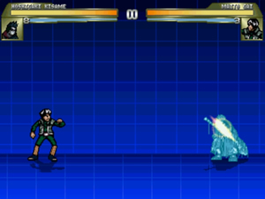
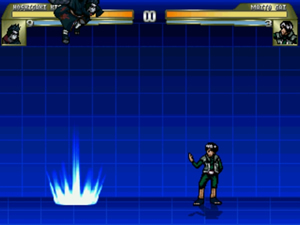
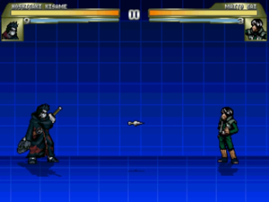
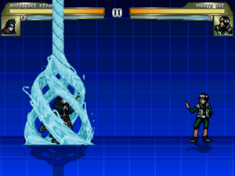
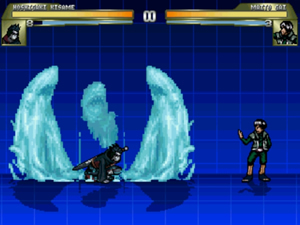
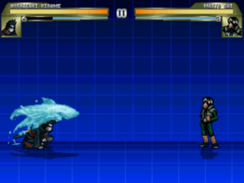
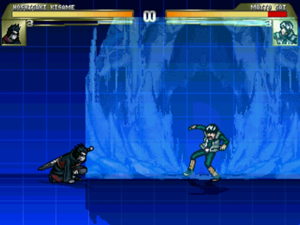

FICHA
Nome: Hoshigaki Kisame
Jogo: --
Versão: 1.0 Beta
Completo: 100%
Data de Lançamento: 24/03/2010
DESENVOLVIMENTO
Ripagem de Imagens: Neimed e zxcv11791
Ripagem de Sons: --
Testadores: ThunderBert, MD_Naruto
HISTÓRIA DO CHAR
Passado:
Ele é o companheiro de Uchiha Itachi. Era do vilarejo secreto da Névoa (Kiri),
membro dos sete espadachins do vilarejo, junto com Momochi Zabuza, Choujiro e
Kurosuki Raiga (embora personagens vistos apenas no anime não são tido como
canônicos, como é o caso de Raiga) e outros três ninjas ainda não citados.
Fugiu do vilarejo e entrou na Akatsuki, virando o membro que tem mais chakra
em toda a organização e possivelmente um dos shinobis mais poderosos de toda a
história da Vila Oculta da Névoa, sendo ele conhecido em sua terra natal como:
O Predador da Névoa Oculta. Sempre anda com sua espada Samehada, que ataca e
absorve o chakra do oponente e só pode ser usada por ele, qualquer outro que
ponha a mão nela será ferido. Domina com perfeição jutsus do elemento Suiton (água).
Força:
Kisame se destaca por ser um exímio usuário de Suiton, por ser muito experiente
nessa área ele é capaz de criar sua própria água para a utilização de suas
técnicas, algo que poucos ninjas são capazes de fazer. Ele era o ninja mais
poderoso no grupo dos Sete Espadachins da Névoa e um dos mais fortes de sua
vila de origem. Sua espada é feita de um material que não corta, mas raspa,
toda vez que sua espada fere a pele de uma pessoa também rouba parte de seu
chakra e a transfere para Kisame, que podendo se curar e que somado a sua enorme
quantidade de chakra dá a ele uma reserva gigantesca de energia que permite a
ele usar Suiton a um nível absurdo, podendo inundar uma grande área com pouco
esforço. As protuberâncias abaixo de seus olhos são guelrras, que permitem a
ele respirar debaixo da água. Ele pode se fundir com a sua espada Samehada,
dentre os membros da Akatsuki, Kisame possui a maior quantidade de chakra.
CRÉDITOS
Author: Leonardo/5uper
Site: --
E-mail: leo.claro@gmail.com
ARQUIVOS
Kisame-5uper.def
Kisame-5uper.air
Kisame-5uper.cmd
Kisame-5uper.cns
Kisame-5uper.sff
Kisame-5uper.snd
Kisame-5uper.act
LEIA-ME.txt
INSTALAÇÃO
Para colocar Hoshigaki Kisame no seu M.U.G.E.N. primeiro tenha certeza de que
há espaço no seu System.def abrindo-o com um editor de texto(como Wordpad) e
aumentando o número de Columns e Rows se necessário.
Se já tiver espaço,bom.
Mande todos os arquivos para uma pasta de nome Kisame-5uper e coloque-a na pasta
CHARS de seu M.U.G.E.N.
Agora, entre no arquivo Select.def e procure por uma parte com [Characters]
escrito.
Logo embaixo escreva:
Kisame-5uper (se quiser que ele esteja no seu jogo)
Kisame-5uper, stages/estagio.def (se quiser que ele tenha uma fase própria no Arcade
Mode)
Kisame-5uper, stages/estagio.def, music=sound/nomedamusica.def (se quiser que a
fase do modo Arcade tenha música própria)
Se quiser que ele seja o último chefe de seu jogo, acrescente , order=3 logo
após a música ou o estágio(vindo em últmo lugar),senão, coloque :, order=2
para que esteja num nível anterior a último chefe.
O QUE FALTA
Boa pergunta...
O QUE TEM
.2 Supers
.1 Hyper
.Kawarimi
.Kunai
.Barreira d'agua
.Super Pulo
NOVIDADES
.NENHUMA ATUALIZAÇÃO AINDA, VERSÃO BETA 1.0
BIOGRAFIA
KISAME
Vilarejo: Secreto da Névoa
Séries: Naruto, Naruto Shippuden
Técnica : Suiton
Níveis de Técnicas:
Segundo o Databook 3 pag. 166,167, Kisame Hoshigaki:
Nota: As pontuações variam de 0 a 5.
* Ninjutsu: 5.0
* Taijutsu: 4.5
* Genjutsu: 2.5
* Inteligência: 4.0
* Força: 5.0
* Agilidade: 4.0
* Estamina: 5.0
* Selos: 3.0
Missões Completadas:
Segundo o Databook 3 pag. 166,167, Kisame Hoshigaki completou:
* Rank D: 3
* Rank C: 68
* Rank B: 154
* Rank A: 78
* Rank S: 29
MODOS DE JOGO
Normal:
Sem muitas explicações, Kisame pula, anda, se movimenta normalmente em sua
velocidade e força original. Seu power cresce com o tempo...
COMANDOS
Legenda:
F - Frente
T - Trás
B - Baixo
C - Cima
Básicos:
a - Barreira d'agua
b - Kunai
c - Kawarimi
x - Espadada Fraca
y - Espadada Media
z - Espadada Forte
Kawarimi:
.Kawarimi - c (apenas aperte uma vez)
Kisame irá utilizar o kawarimi, ele é somente ativado quando levar ataque do oponente.
*Aperte uma única vez, e espere o inimigo te atacar

Super Pulo
.Super Pulo
B, C
B, CF
B, CT

Kunai:
.Kunai - b
Kisame joga kunai no oponente.

Barreira d'agua(Chakra)
.Barreira d'agua(Chakra) - a (SEGURA)
Kisame irá utilizar uma barreira d'agua girando em circulo ao redor do seu corpo.
*Pressionar e segurar o botão

Super:
.Super 1 - B, BT, T, x+y
-Level 1 ou 2
Kisame utiliza o Jutsu do tubarão, sumonando 5 dragões de agua ao seu redor.

.Super 2 - B, BT, T, z+x
-Level 2/2
Kisame utiliza o Jutsu do tubarão, enviando contra o oponente.

Hyper
.Hyper - B, BT, T, z+y
-Level 3
Kisame faz uma onda ao redor do oponente e depois joga a onda em cima do oponente.

AGRADECIMENTOS
*Elecbyte - Por ter criado essa Engine maravilhosa!!!
*MD_NARUTO - Professor da Mugen School, e que tem paciencia desde o ano passado me encinando xD
*Blain - 1 dos professores que me encinaram o que eu sei
*Taylor - Por sempre está me tirando dúvidas =D
*THUNDERBERT - Por sempre está me tirando dúvidas, me ajudando nos golpes, e dando dicas =D
*BERTO - Por ter me indicado a Mugen School onde conheci o pessoal (MD_Naruto, WK, e etc)
*Neimed e zxcv11791 - Por ter ripado esse Excelente Sprite!
CONCLUSÃO
Espero que todos gostem do char, e podem utilizar da forma que quiserem...